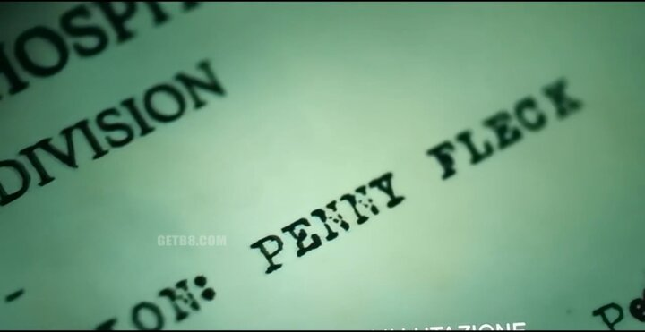
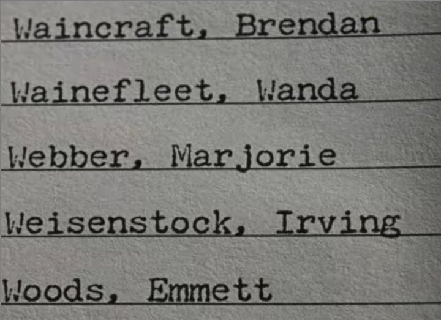
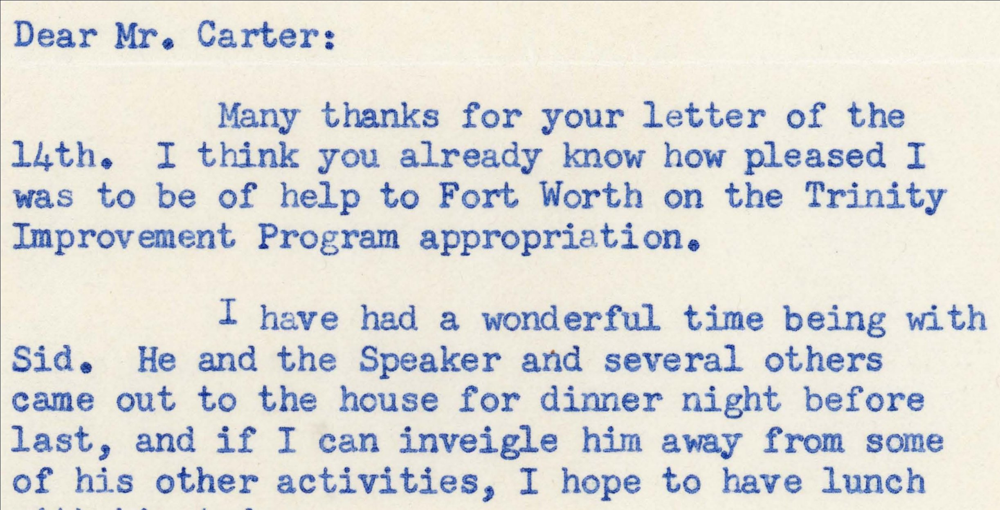
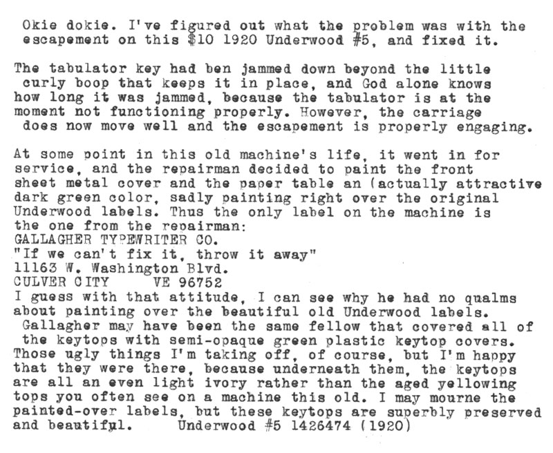

Most typewriter fonts out there are hopelessly unrealistic—especially the popular freeware ones, most of them made in the early 2000’s.
What's worse, the typewriter is now so old that many (mostly young) people don't even know that the output is unrealistic!!
The main problem is that an analog typewriter is incapable of producing the same output every time. Even the IBM Selectric, one of the most mechanically sophisticated typewriters ever produced, is incapable of doing this. However, most people are not trying to imitate an IBM Selectric; instead they are trying to imitate much older typewriters such as the Underwood №5.
I had the idea for this font for a while, but bearing in mind how much work it would be to recreate, and how many other projects I had to do, I put it off & put it off. Then, one day in Q4 2019, I saw Joker, a very popular film. At the climax of the film, the eponymous Joker is reading typewritten documents.

The absurd lack of realism displayed here let me know that I could put this project off no longer. In case you don't see anything wrong, let me try to help:
While working on the project, incredibly, another bad typewriter scene intruded upon my life. I don't often sit around and watch movies, so I suppose there are only two possibilities:
Behold, The Irishman and its ‹W›’s:

In case you still continue to doubt that I am right about how analog typewriter outlook appears, let me display below a sampling of it before I discuss my solution to this vexing issue.
Notice especially the dissimilarity of the «a»’s—

(Image courtesy Texas Christian University—Mary Couts Burnett Library)
Notice especially the dissimilarity of the CAPITAL LETTERS—

(Image courtesy Theodore Munk)
Content © Fredrick R. Brennan, originally released on 1 January 2020